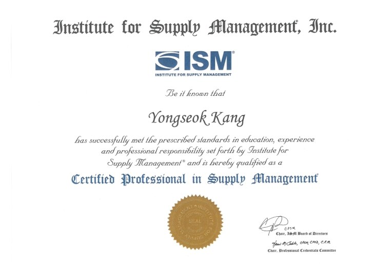
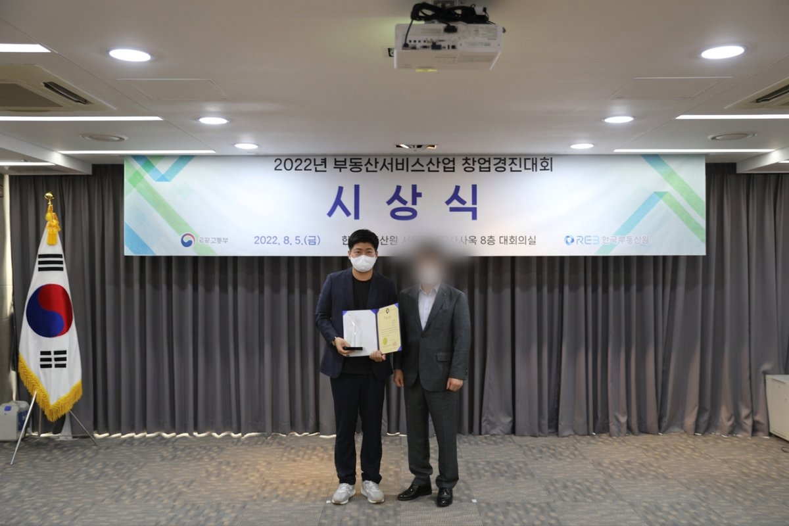

CurrentDaerim Co., Ltd. (DL Group) — Part Leader, Diagnosis & Audit (General Manager); regular diagnosis of 7 business divisions and subsidiaries
Key resultsKRW 700M saved per year · 23% outsourcing cost reduction · KRW 13B system PM · 40% faster credit assessment
Open toInternal audit / risk management leadership · Purchasing & SCM leadership · Management support roles combining purchasing and planning
I began on construction sites and moved through purchasing planning, a KRW 13B system build as project manager, and strategy planning — 17 years in management support. At Daerim (DL Group) I now lead regular diagnosis of 7 business divisions and subsidiaries as Part Leader of Diagnosis & Audit, and before that built and operated the enterprise risk management (ERM) framework. Between 2018 and 2020 I cut KRW 700M a year through RPA and AI automation, and reduced outsourcing costs by 23% with a data-driven sourcing strategy. Having run purchasing, process innovation and planning myself, I know where control weakens inside a process. In audit I read the process as someone who has worked in it; in purchasing I leave savings that stay in the system.


An internal audit or risk management leadership role. I am also open to management support positions that combine purchasing and planning.
I am a hands-on auditor: I spent 13 years in purchasing, process innovation and planning before moving into audit. Having worked across operations and process change, I can see the process as a whole — which lets me trace a finding back to its cause rather than stopping at the symptom.
I led a 15-person project team and have been a part leader in both strategy planning and diagnosis/audit. I reported diagnosis results and improvement plans directly to the CEO, and led the authoring of the diagnosis/audit and RMC manuals as well as the enterprise risk management framework. I work by agreeing standards with the business divisions and then operating to them.
At LG Group affiliates I covered construction, purchasing agency services, asset and building management, and leisure. At DL Group I have worked across petrochemical trading, construction, IT and logistics, and have carried out diagnosis at an overseas subsidiary.
Email fwipace@naver.com and I will send it. This page can also be saved as a PDF with the Print/PDF button in the contact section.